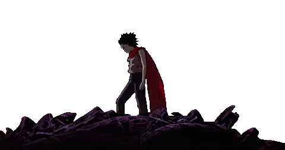

I also like anime.
I started watching it when I was 12, my first was Inuyasha on toonami.

One of my favorite films is Akira.
Akira, released in 1988, was an anime film that broke through the stigma that "cartoons are for children".
"Akira explores themes of disaffected youth, corruption in government, rampant religious zealotry, nuclear-energy-caused telekinesis, destruction, and rebirth." - Nerdist.com
It's truly a classic.

The gif above where Kaneda captures the small orb Akira, Tetsuo, and the gifted children were reduced to is one of my favorite scenes in the film.
What if Tetsuo didn't let his own insecurities lead his fate?
Maybe then he would be able to acknowledge the beautiful friendships he created in the motorcycle gang rather than destroying it out of his own fear of incompetence.
Maybe he would've been able to stand alongside the Kaneda he admired rather than fearing being stuck in his shadow.
Kaneda suffered the loss of his brotherhood and I don't think he will ever be able to villianize Tetsuo but instead view him as a friend who lost their way.